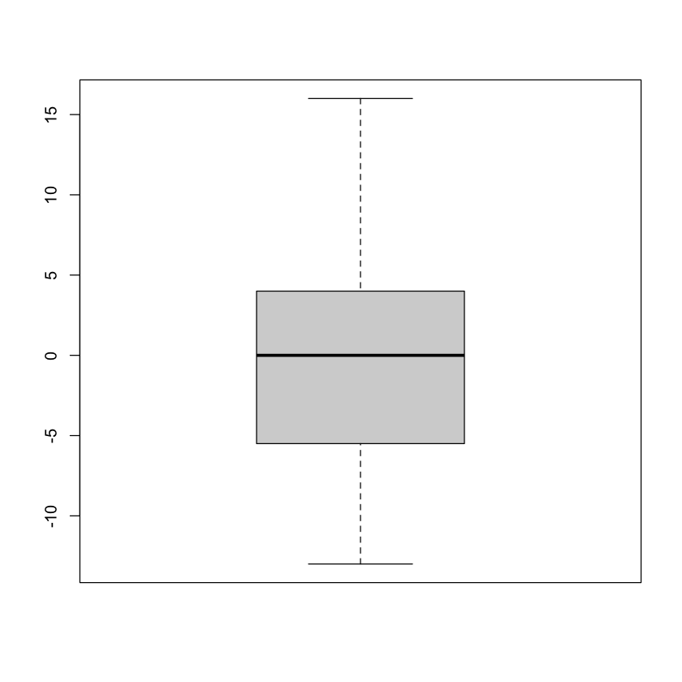
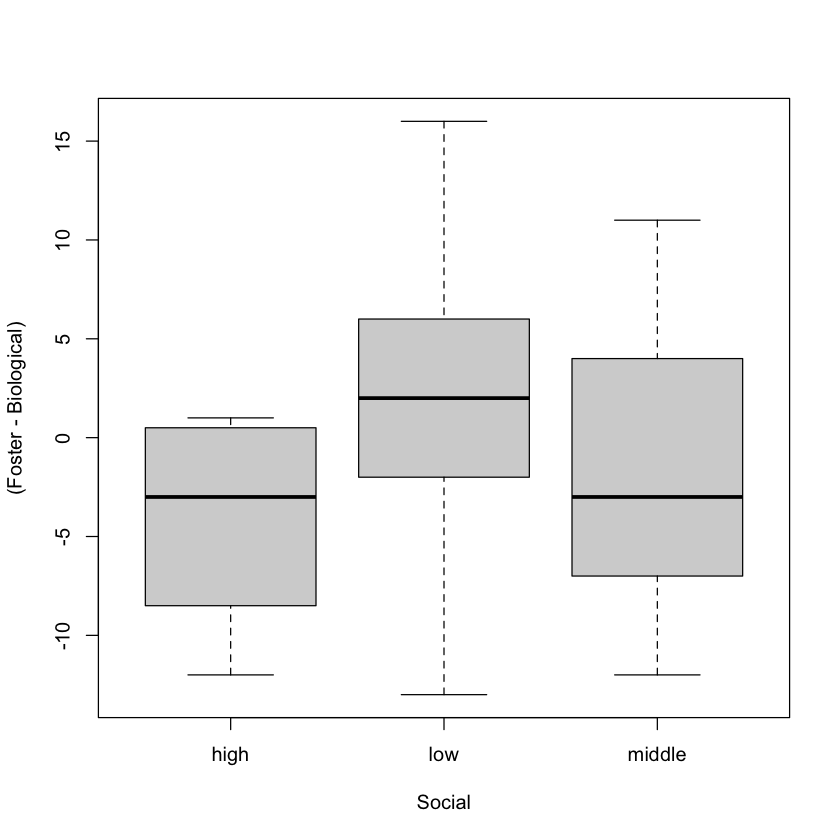
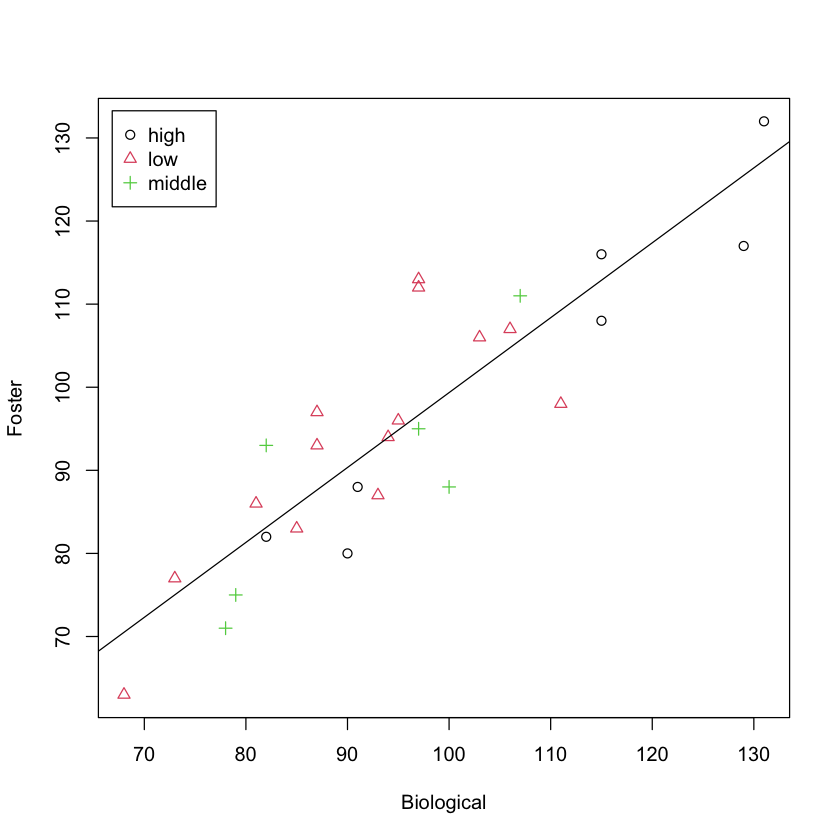
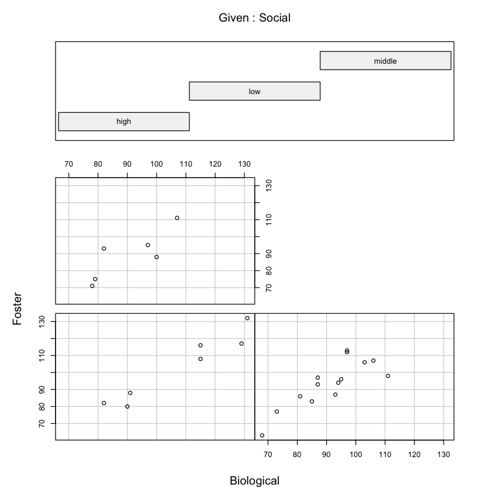
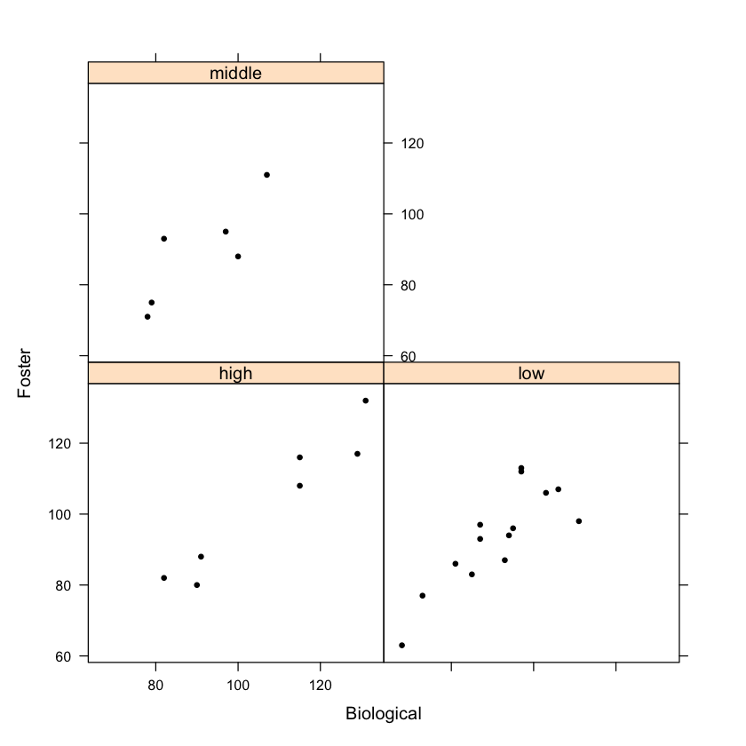
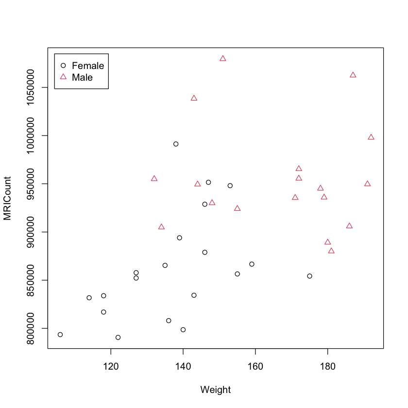

Chapter 2: Quantitive Data
Bivariate Data: Two Quantitive (Numerical) Variables
We start with importing a data set library called MASS. It contains the example we will be working with.
# import the MASS data set library.
library(MASS)
This import will enlarge the data set examples in R. To see a list of new data sets that come with the MASS package, you can simply the following command.
# list the data sets that come with MASS
data(package = 'MASS')
Or, simply list of all data sets currently accessable in your session. (The data sets will be sorted in blocks according the package they come with.)
# list all data sets in `R` (the updated list)
data()
Example 1
In this example, we look at the mammals data set.
# see how the data frame looks like by inspecting the first few rows.
head(mammals)
| body | brain | |
|---|---|---|
| <dbl> | <dbl> | |
| Arctic fox | 3.385 | 44.5 |
| Owl monkey | 0.480 | 15.5 |
| Mountain beaver | 1.350 | 8.1 |
| Cow | 465.000 | 423.0 |
| Grey wolf | 36.330 | 119.5 |
| Goat | 27.660 | 115.0 |
# how many rows and columns the data set contains.
dim(mammals)
- 62
- 2
After looking at the first few rows, and the dimension of the data frame, we see that the data set mammals contains body and brain sizes of 62 different mammal species.
If you want to learn more about the data set mammals, you can check the documentation of the data set by simply typing ?mammals or help(mammals).
# if you want to learn more about the data set, you can check the documentation
?mammals
To make sure the format of the data set you can type the following commands:
# is the data set stored in a matrix?
is.matrix(mammals)
FALSE
# is the data set stored in a data frame?
is.data.frame(mammals)
TRUE
# or just ask for the class: data frame or matrix?
class(mammals)
'data.frame'
# to see the answers of most of the questions above, you can simply type
str(mammals)
'data.frame': 62 obs. of 2 variables:
$ body : num 3.38 0.48 1.35 465 36.33 ...
$ brain: num 44.5 15.5 8.1 423 119.5 ...
The command summary() summarizes each numerical column of the data frame and gives the frequency distributions of the categorical columns.
summary(mammals)
body brain
Min. : 0.005 Min. : 0.14
1st Qu.: 0.600 1st Qu.: 4.25
Median : 3.342 Median : 17.25
Mean : 198.790 Mean : 283.13
3rd Qu.: 48.202 3rd Qu.: 166.00
Max. :6654.000 Max. :5712.00
The problem with this data set is that the difference between the max and min is huge!
Digression
What are the smallest and largest animals in the mammals dataset?
# which.min() gives the row number that contains the minimum of the column you specify
# then to display that row, you can use the [] method
mammals[which.min(mammals$body), ]
| body | brain | |
|---|---|---|
| <dbl> | <dbl> | |
| Lesser short-tailed shrew | 0.005 | 0.14 |
mammals[which.max(mammals$body), ]
| body | brain | |
|---|---|---|
| <dbl> | <dbl> | |
| African elephant | 6654 | 5712 |
Back to the example:
To see a visualization of the 5-number-summary (min, Q1, median, Q2, max), we use boxplots.
# to see the boxplot of each numerical column
boxplot(mammals)
The problem with this visualization is that the most of the mammals are relatively small (compared to a few huge ones), and to fit the bigger mammals into the graph, the boxplots are squeezed down all the way down.
You can easy create scatter plots for every pair of variables (our dataset contains two variables body and brain hence there will be only one scatter plot).
plot(mammals)
Again, most of the points are squeezed down to the bottom left corner due to the existence of the very large mammals such as the elephant.
What our textbook suggest is to using the logarithmic scale and see the order of magnitudes of the numbers. For those of you who don't remember much about logarithms:
Digression: Logarithms
The (natural) logarithm of a (positive) number $b$ is the power you need to raise the Euler number $e$ (which is an irrational number like $\pi$ that happens to have very nice properties in math) to get $b$:
$$\log(a)= b \leftrightarrow e^b = a$$
The Euler number $e$ has the approximate decimal value $2.7182$.
To display $e$ in R:
exp(1)
What logarithm computes:
log(1000)
(exp(1))^6.907755279
# the error is due to rounding.
$$\log(1000)\approx 6.908 \leftrightarrow e^{6.908} \approx 1000$$
You can think of $\log(1000)$ as the number that tells how big 1000 is multiplicatively (when the standard/unit is taken to be the number $e\approx 2.7182$.)
Back to the example
summary(log(mammals))
These numbers tell you how big the values are multiplicatively. This is a neat trick: If the numbers deviate a lot additively (i.e. max - min is too big), you may want to compare the numbers multiplicatively.
plot(log(mammals), xlab="log(body)", ylab="log(brain)", las=1)
boxplot(log(mammals))
Note that when you think of the numeric data in a multiplicative way, the visualizations look much better.
One very important number that summarizes the relationship between two numberical variables is the (Pearson) correlation coefficient. It measures how strongly the values depend on each other:

The (Pearson) correlation coefficient $r$ tells us two important things:
The sign of the correlation coefficient between the variables tells us if the relation is positive or negative, i.e. if the second variable increases or decreases on average, when the first variable increases.
The size of the correlation coefficient tells how strongly the variables are related. If the $|r|$ is close to 1, then the variables are strongly (linearly) related, and if $|r|$ is close to 0, then the strength of the relation between the variables is quite weak, if we can say there is a relation at all.
cor(log(mammals))
| body | brain | |
|---|---|---|
| body | 1.0000000 | 0.9595748 |
| brain | 0.9595748 | 1.0000000 |
Staying in the log-log scale, we see that brain and body variables have a correlation constant of 0.960, which is pretty close to 1. In other words, we can pretty accurately say, the larger the body size, the larger the brain size for mammals on average. (I know this sounds as a trivial observation, but think of the dinosaurs: dinosaur brain.)
If there is a strong linear relation between two numeric variables (which we can find out by looking at the correlation coefficient of them), we can model that relation using a line (the simplest non-trivial model).
# to simplify the prompts, first give log() values new names
x = log(mammals$body)
y = log(mammals$brain)
# gives the best fitting line
#when x is taken as the independent variable and y as the dependent variable
lm(y ~ x)
Call:
lm(formula = y ~ x)
Coefficients:
(Intercept) x
2.1348 0.7517
We can add the best-fit line to the scatter plot using the following lines:
# creates short hand variable names for the columns.
x = log(mammals$body)
y = log(mammals$brain)
# draws the scatter plot of x versus y.
plot(x, y, xlab="log(body)", ylab="log(brain)", las=1)
# abline() adds a straight line to the plot,
# the line we want to add is the linear model, so we use lm().
abline(lm(y ~ x))
---
Example 2
The data set of this example comes from the package "UsingR".
To see more about that package: UsingR
First, we need to install this package.
# you install a package only once
install.packages("UsingR")
Updating HTML index of packages in '.Library'
Making 'packages.html' ...
done
Then we need to import the package (i.e. tell R that we will use it in the session).
# you import a package every time you restart rstudio
library(UsingR)
Loading required package: HistData
Loading required package: Hmisc
Loading required package: lattice
Loading required package: survival
Loading required package: Formula
Loading required package: ggplot2
Attaching package: ‘Hmisc’
The following objects are masked from ‘package:base’:
format.pval, units
Attaching package: ‘UsingR’
The following object is masked from ‘package:survival’:
cancer
twins is a data frame that comes with that package.
str(twins)
'data.frame': 27 obs. of 3 variables:
$ Foster : num 82 80 88 108 116 117 132 71 75 93 ...
$ Biological: num 82 90 91 115 115 129 131 78 79 82 ...
$ Social : Factor w/ 3 levels "high","low","middle": 1 1 1 1 1 1 1 3 3 3 ...
head(twins)
| Foster | Biological | Social | |
|---|---|---|---|
| <dbl> | <dbl> | <fct> | |
| 1 | 82 | 82 | high |
| 2 | 80 | 90 | high |
| 3 | 88 | 91 | high |
| 4 | 108 | 115 | high |
| 5 | 116 | 115 | high |
| 6 | 117 | 129 | high |
summary(twins)
Foster Biological Social
Min. : 63.00 Min. : 68.0 high : 7
1st Qu.: 84.50 1st Qu.: 83.5 low :14
Median : 94.00 Median : 94.0 middle: 6
Mean : 95.11 Mean : 95.3
3rd Qu.:107.50 3rd Qu.:104.5
Max. :132.00 Max. :131.0
Actually, this is quite a controversial data set https://www.intelltheory.com/burtaffair.shtml The data set has 3 variables (3 columns). 27 twins are studied. They were seperated at birth. One kid is raised in a foster family. One The Foster column contains the IQ of the child whoraised in the foster family, Biological column contains the IQ level of the child that is raised in his/her biological family. Social is a categorical variable that tells about the social status of the biological parents (high, middle or low).
An interesting data visualization is the difference between the IQ levels of the identical twins (one raised in a foster family and the other one is raised in the biological family).
boxplot(twins$Foster - twins$Biological)

This boxplot looks symmetric. But a more interesting visualization would be that IQ difference versus the social status of the biological parents.
The ~ in the (Foster - Biological) ~ Social stands for versus.
The second variable is taken to be the independent variable (x-axis) and the first variable is taken to be the dependent variable (y-axis).
Since the Social is a categorical variable, the values for it are discrete: low, middle high.
Since we'll spend some time with twins data, we may as well attach the data frame.
attach(twins)
# takes the twins dataset
# takes Social as the horizontal variable
# takes Foster - Biological as the vertical variable
# draws boxplots for different values of the horizontal variable "Social"
boxplot((Foster-Biological) ~ Social, twins)

Similarly, we can draw a scatterplot without detailing by the Social values:
plot(twins$Foster, twins$Biological)
Again, we achieve a better visualization if we take the values of the Social into account.
To make a nice looking scatter plot, we first will one-hot encode the Social column:
In other words, we will convert the text values in the Social column to numbers.
status = as.integer(Social)
status
- 1
- 1
- 1
- 1
- 1
- 1
- 1
- 3
- 3
- 3
- 3
- 3
- 3
- 2
- 2
- 2
- 2
- 2
- 2
- 2
- 2
- 2
- 2
- 2
- 2
- 2
- 2
Social
- high
- high
- high
- high
- high
- high
- high
- middle
- middle
- middle
- middle
- middle
- middle
- low
- low
- low
- low
- low
- low
- low
- low
- low
- low
- low
- low
- low
- low
Levels:
- 'high'
- 'low'
- 'middle'
The value high is converted to 1, middle to 3, and low to 2 in the status variable.
# create a scatter plot:
# pch argument takes numerical values (which is why we defined the status variable above)
# and determines the point shapes: triangle, circle etc.
#
# col determines the color.
plot(Foster ~ Biological, data=twins, pch=status, col=Social)
# add a legend to topleft corner.
legend("topleft", c("high","low","middle"), pch=1:3, col=1:3, inset=.02)
# add a linear model for the aggregate data.
abline(lm(Foster ~ Biological))

To learn more about what you can do with the plot() function, you can check out this website: Basic and Advanced Graphics in R.
We can also draw conditional scatter plots. You can think of a specifying a condition as filtering/masking for each value of the condition variable.
In the visualization below, three scatterplots are produced. One for each value of the variable Social: low, middle, high.
coplot(Foster ~ Biological | Social, data = twins, subscripts = TRUE)
Warning message in plot.xy(xy.coords(x, y), type = type, ...):
“"subscripts" is not a graphical parameter”
Warning message in plot.xy(xy.coords(x, y), type = type, ...):
“"subscripts" is not a graphical parameter”
Warning message in plot.xy(xy.coords(x, y), type = type, ...):
“"subscripts" is not a graphical parameter”

One problem with this coplot is that the order is not clear: high is lower left, low is lower right, middle is top left (since high, low and middle is how the values are ordered alphabetically).
For a better looking graph, we can use the xyplot() function which comes with the lattice package.
xyplot(Foster ~ Biological|Social, data=twins)
As usual, we can change the point shapes and the colors using the pch and col arguments.
xyplot(Foster ~ Biological|Social, data=twins, pch=20, col=1)

If you want what else you can do with the lattice package, take a look at this website: Getting Started with Lattice Graphics.
Once you're done working with an attached data frame, don't forget to detach it.
detach(twins)
Multivariate Data: Several Quantitative Variables
Example 3
You can import the data as follows:
By the way, the link in the textbook didn't work. I took the data from: Brain Size and Intelligence.
| Column name | Description |
|---|---|
| Gender | Male or Female |
| FSIQ | Full Scale IQ scores based on the four Wechsler (1981) subtests |
| VIQ | Verbal IQ scores based on the four Wechsler (1981) subtests |
| PIQ | Performance IQ scores based on the four Wechsler (1981) subtests |
| Weight | body weight in pounds |
| Height | height in inches |
| MRI Count | total pixel count from the 18 MRI scans |
brain = read.csv("http://bcs.whfreeman.com/WebPub/Statistics/shared_resources/EESEE/BrainSize/Data_Files/BRAINSZE.TXT",
sep = '\t',
header = TRUE)
head(brain)
| Gender | FSIQ | VIQ | PIQ | Weight | Height | MRICount | |
|---|---|---|---|---|---|---|---|
| <chr> | <int> | <int> | <int> | <chr> | <chr> | <int> | |
| 1 | Female | 133 | 132 | 124 | 118 | 64.5 | 816932 |
| 2 | Male | 140 | 150 | 124 | . | 72.5 | 1001121 |
| 3 | Male | 139 | 123 | 150 | 143 | 73.3 | 1038437 |
| 4 | Male | 133 | 129 | 128 | 172 | 68.8 | 965353 |
| 5 | Female | 137 | 132 | 134 | 147 | 65 | 951545 |
| 6 | Female | 99 | 90 | 110 | 146 | 69 | 928799 |
class(brain$Gender)
'character'
summary(brain)
Gender FSIQ VIQ PIQ
Length:40 Min. : 77.00 Min. : 71.0 Min. : 72.00
Class :character 1st Qu.: 89.75 1st Qu.: 90.0 1st Qu.: 88.25
Mode :character Median :116.50 Median :113.0 Median :115.00
Mean :113.45 Mean :112.3 Mean :111.03
3rd Qu.:135.50 3rd Qu.:129.8 3rd Qu.:128.00
Max. :144.00 Max. :150.0 Max. :150.00
Weight Height MRICount
Length:40 Length:40 Min. : 790619
Class :character Class :character 1st Qu.: 855918
Mode :character Mode :character Median : 905399
Mean : 908755
3rd Qu.: 950078
Max. :1079549
We have a little issue here: The Gender, Weight and Height columns are not summarized nicely:
The summary of the Gender category should be a frequency table.
And Weight and Height are numerical variables, but we don't have the descriptive statistics of those variables unlike the other numerical categories.
class(brain$Gender)
'character'
class(brain$Weight)
'character'
The reason is that those variables are stored as character.
# change the data type of the Gender column.
brain$Gender = as.factor(brain$Gender)
summary(brain)
Gender FSIQ VIQ PIQ
Female:20 Min. : 77.00 Min. : 71.0 Min. : 72.00
Male :20 1st Qu.: 89.75 1st Qu.: 90.0 1st Qu.: 88.25
Median :116.50 Median :113.0 Median :115.00
Mean :113.45 Mean :112.3 Mean :111.03
3rd Qu.:135.50 3rd Qu.:129.8 3rd Qu.:128.00
Max. :144.00 Max. :150.0 Max. :150.00
Weight Height MRICount
Length:40 Length:40 Min. : 790619
Class :character Class :character 1st Qu.: 855918
Mode :character Mode :character Median : 905399
Mean : 908755
3rd Qu.: 950078
Max. :1079549
The Gender column is fixed. To see what was wrong with the Weight and Height columns, let's look at the values in those columns:
brain$Weight
- '118'
- '.'
- '143'
- '172'
- '147'
- '146'
- '138'
- '175'
- '134'
- '172'
- '118'
- '151'
- '155'
- '155'
- '146'
- '135'
- '127'
- '178'
- '136'
- '180'
- '.'
- '186'
- '122'
- '132'
- '114'
- '171'
- '140'
- '187'
- '106'
- '159'
- '127'
- '191'
- '192'
- '181'
- '143'
- '153'
- '144'
- '139'
- '148'
- '179'
Dots were used for missing data, and R ended up interpreting the values as text instead of numerical.
brain$Weight = as.numeric(brain$Weight)
brain$Height = as.numeric(brain$Height)
Warning message in eval(expr, envir, enclos):
“NAs introduced by coercion”
Warning message in eval(expr, envir, enclos):
“NAs introduced by coercion”
brain$Weight
- 118
- <NA>
- 143
- 172
- 147
- 146
- 138
- 175
- 134
- 172
- 118
- 151
- 155
- 155
- 146
- 135
- 127
- 178
- 136
- 180
- <NA>
- 186
- 122
- 132
- 114
- 171
- 140
- 187
- 106
- 159
- 127
- 191
- 192
- 181
- 143
- 153
- 144
- 139
- 148
- 179
Note that the dots are converted to NA (which is R way of saying a numeric value is not available.)
summary(brain)
Gender FSIQ VIQ PIQ Weight
Female:20 Min. : 77.00 Min. : 71.0 Min. : 72.00 Min. :106.0
Male :20 1st Qu.: 89.75 1st Qu.: 90.0 1st Qu.: 88.25 1st Qu.:135.2
Median :116.50 Median :113.0 Median :115.00 Median :146.5
Mean :113.45 Mean :112.3 Mean :111.03 Mean :151.1
3rd Qu.:135.50 3rd Qu.:129.8 3rd Qu.:128.00 3rd Qu.:172.0
Max. :144.00 Max. :150.0 Max. :150.00 Max. :192.0
NA's :2
Height MRICount
Min. :62.00 Min. : 790619
1st Qu.:66.00 1st Qu.: 855918
Median :68.00 Median : 905399
Mean :68.53 Mean : 908755
3rd Qu.:70.50 3rd Qu.: 950078
Max. :77.00 Max. :1079549
NA's :1
When you use the summary() function, R will tell you how many missing values there are and ignore those values when computing the descriptive statistics.
Maybe it's not a bad idea to attach the data frame at this point.
attach(brain)
Our first remark is that R will have trouble when computing the mean when there are NA values in data:
mean(Height)
<NA>
To fix that (actually this is what R does when summarizing), we can tell R to ignore those values:
# remove the NA values and then compute the mean.
mean(Height, na.rm = TRUE)
68.525641025641
One obvious grouping in this data set is by Gender.
If we want display statistics seperately for males and females, we can use the by() function.
by(data=brain, INDICES=brain$Gender, FUN=summary, na.rm=TRUE)
# INDICES: where to look when grouping.
# FUN: (short for function), what to compute (we want summary in this example)
# na.rm = TRUE: same as above, remove the na values when computing.
brain$Gender: Female
Gender FSIQ VIQ PIQ Weight
Female:20 Min. : 77.00 Min. : 71.0 Min. : 72.0 Min. :106.0
Male : 0 1st Qu.: 90.25 1st Qu.: 90.0 1st Qu.: 93.0 1st Qu.:125.8
Median :115.50 Median :116.0 Median :115.0 Median :138.5
Mean :111.90 Mean :109.5 Mean :110.5 Mean :137.2
3rd Qu.:133.00 3rd Qu.:129.0 3rd Qu.:128.8 3rd Qu.:146.2
Max. :140.00 Max. :136.0 Max. :147.0 Max. :175.0
Height MRICount
Min. :62.00 Min. :790619
1st Qu.:64.50 1st Qu.:828062
Median :66.00 Median :855365
Mean :65.77 Mean :862655
3rd Qu.:66.88 3rd Qu.:882668
Max. :70.50 Max. :991305
------------------------------------------------------------
brain$Gender: Male
Gender FSIQ VIQ PIQ Weight
Female: 0 Min. : 80.00 Min. : 77.00 Min. : 74.0 Min. :132.0
Male :20 1st Qu.: 89.75 1st Qu.: 95.25 1st Qu.: 86.0 1st Qu.:148.8
Median :118.00 Median :110.50 Median :117.0 Median :172.0
Mean :115.00 Mean :115.25 Mean :111.6 Mean :166.4
3rd Qu.:139.25 3rd Qu.:145.00 3rd Qu.:128.0 3rd Qu.:180.8
Max. :144.00 Max. :150.00 Max. :150.0 Max. :192.0
NA's :2
Height MRICount
Min. :66.30 Min. : 879987
1st Qu.:68.90 1st Qu.: 919529
Median :70.50 Median : 947242
Mean :71.43 Mean : 954855
3rd Qu.:73.75 3rd Qu.: 973496
Max. :77.00 Max. :1079549
NA's :1
Let's make some plots.
# first, convert the Gender values to numbers
# to be able to use them as symbol or color
gender = as.integer(Gender)
plot(Weight, MRICount, pch=gender, col=gender)
legend("topleft", c("Female", "Male"), pch=1:2, col=1:2, inset=.02)

One cool visualization is pairing the numerical values and plotting all possible scatterplots at once:
# note that the first column is omitted.
pairs(brain[, 2:7])
We can quickly compute the correlation coefficients between pairs of variables by applying a single cor() to the whole data frame (except the first column, which is not a numerical variable).
cor(brain[,2:7])
| FSIQ | VIQ | PIQ | Weight | Height | MRICount | |
|---|---|---|---|---|---|---|
| FSIQ | 1.0000000 | 0.9466388 | 0.9341251 | NA | NA | 0.3576410 |
| VIQ | 0.9466388 | 1.0000000 | 0.7781351 | NA | NA | 0.3374777 |
| PIQ | 0.9341251 | 0.7781351 | 1.0000000 | NA | NA | 0.3868173 |
| Weight | NA | NA | NA | 1 | NA | NA |
| Height | NA | NA | NA | NA | 1 | NA |
| MRICount | 0.3576410 | 0.3374777 | 0.3868173 | NA | NA | 1.0000000 |
There are two issues with the table above:
1. Big issue: Some of the correlation coefficients were not computed (due to missing values).
2. Minor issue: There are simply to many decimals which doesn't look nice.
# round(,2) rounds the number in the first argument to 2 decimals.
# use="pairwise.complete.obs" will only use complete pairs,
# i.e. ignores the pairs if one of the values is NA.
round(cor(brain[, 2:7], use="pairwise.complete.obs"), 2)
| FSIQ | VIQ | PIQ | Weight | Height | MRICount | |
|---|---|---|---|---|---|---|
| FSIQ | 1.00 | 0.95 | 0.93 | -0.05 | -0.09 | 0.36 |
| VIQ | 0.95 | 1.00 | 0.78 | -0.08 | -0.07 | 0.34 |
| PIQ | 0.93 | 0.78 | 1.00 | 0.00 | -0.08 | 0.39 |
| Weight | -0.05 | -0.08 | 0.00 | 1.00 | 0.70 | 0.51 |
| Height | -0.09 | -0.07 | -0.08 | 0.70 | 1.00 | 0.60 |
| MRICount | 0.36 | 0.34 | 0.39 | 0.51 | 0.60 | 1.00 |
From this table, we can see that there is a strong correlation between each of the IQ scores, where as the height or weight don't seem to be correlated to IQ at all.